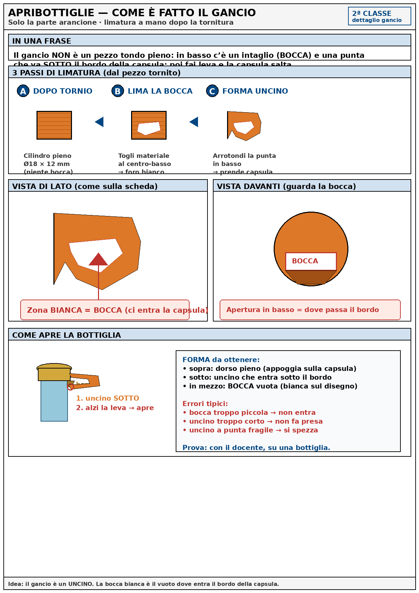
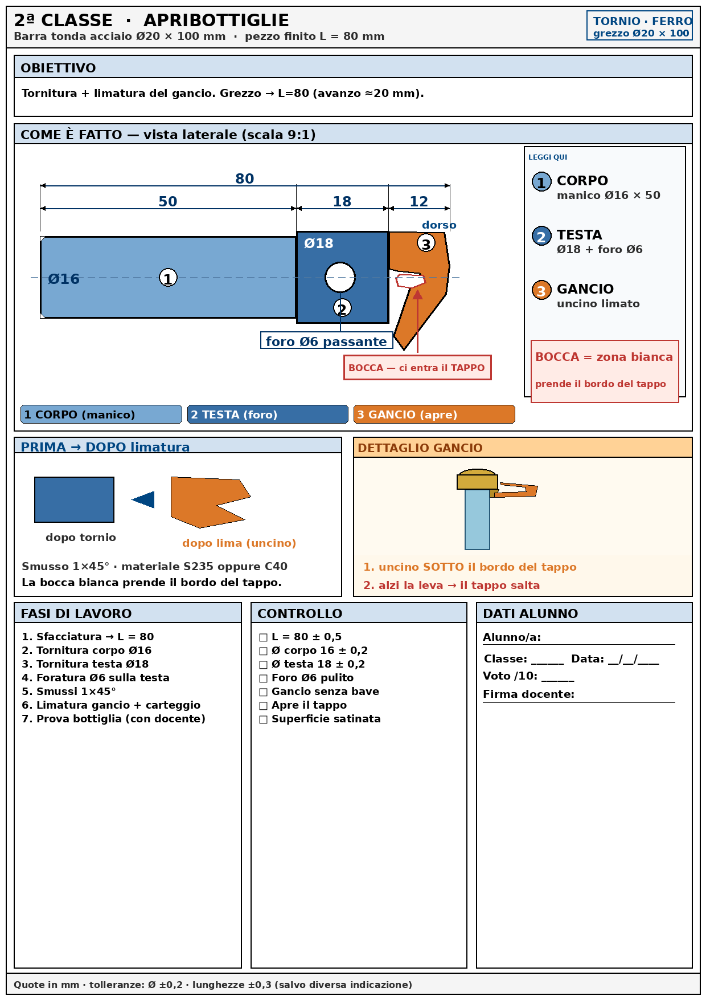
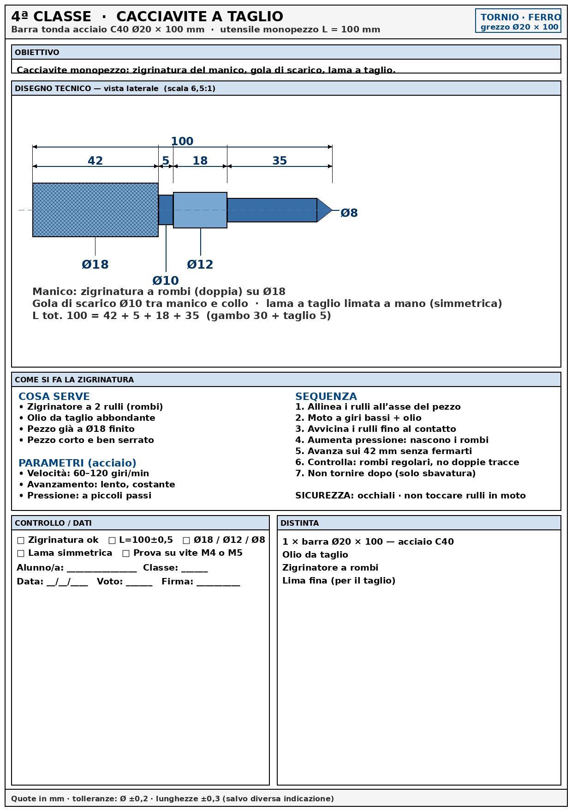
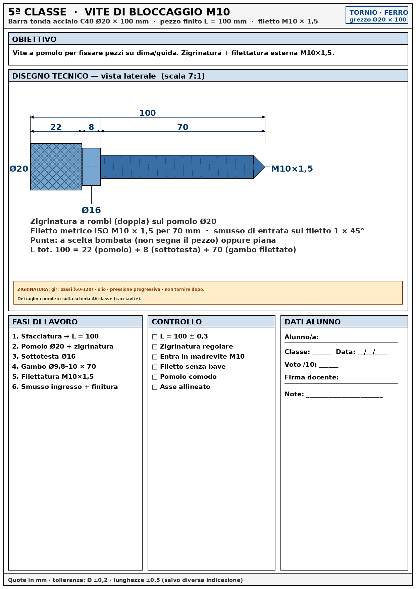
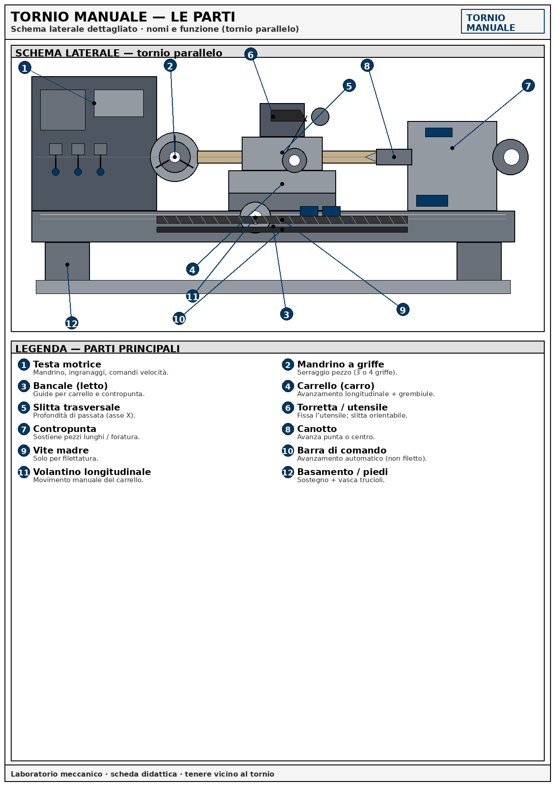
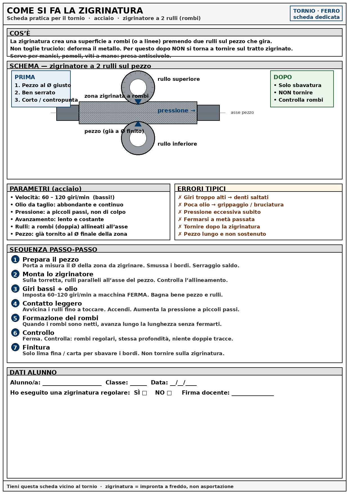

2ª — Gancio: di lato e di fronte
 Scarica confronto
Scarica confronto
Nomi giusti · apri l’immagine · tieni premuto per salvare
Queste NON sono le schede legno (portapenne / sgabello). Sono i progetti in ferro.
Scarica confronto
 Scarica vista fronte
Scarica vista fronte

Scarica spiegazione gancioApri il modello, trascina per ruotare: vedi corpo, testa, foro e bocca del gancio.
Apri apribottiglie 3D
Scarica 2a-apribottiglie.png Scarica 3a-pomolo.png
Scarica 3a-pomolo.png

Scarica 4a-cacciavite.png
Scarica 5a-vite.png
Scarica tornio-parti.png Scarica tornio-leve.png
Scarica tornio-leve.png

Scarica zigrinatura.png